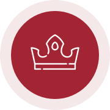

Choose your directionJournal / Editorial draft
A life that feels like yours.
Presence, purpose and relationships belong in the same conversation.
Open a question
Where in your day do you feel involved—and where are you following a script?